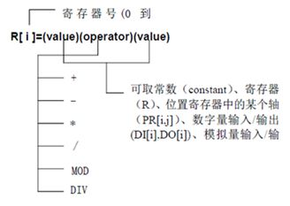

4.2喷漆示教编程
4.2.3寄存器指令R
寄存器指令在寄存器上完成算术运算。寄存器是一个存储数据的变量，本机器人控制系统提供200个R寄存器。
指令格式：R[i]=(value)
R[i]=(value)（operator）(value)
指令注释：把数值(value)赋值给指定的R寄存器。
程序说明如下：
R——寄存器指令
[i]——i的范围是0到199
Value——可以取常数（constant）、寄存器（R）、位置寄存器中的某个轴（PR[i,j]）、数字量输入/输出(DI[i]/DO[i])、模拟量输入/输出(AI[i]/AO[i])。
Operator——把两个数值进行+、-、*、/、MOD、DIV操作
（1） R[i]=(value)+(value)
R[i]=(value)+(value)指令把两个数值的和赋值给指定的R寄存器。
（2） R[i]=(value)-(value)
R[i]=(value)- (value)指令把两个数值的差赋值给指定的R寄存器。
（3） R[i]=(value)*(value)
R[i]=(value)* (value)指令把两个数值的乘积赋值给指定的R寄存器。
（4） R[i]=(value)/(value)
R[i]=(value)/ (value)指令把两个数值的商赋值给指定的R寄存器。
（5） R[i]=(value)MOD(value)
R[i]=(value)MOD(value)指令把两个数值的商的余数（小数部分）赋值给指定的R寄存器。
（6） R[i]=(value)DIV(value)
R[i]=(value)DIV(value)指令把两个数值的商（整数部分）赋值给指定的R寄存器。
示例：
1: R[1] = DI[3]
2: R[R[4]] = AI[R[1]]
3：R[3] = DI[4]+PR[1,2]
4: R[R[4]] = R[1]+1
对于运算寄存器指令，可归纳如下：
